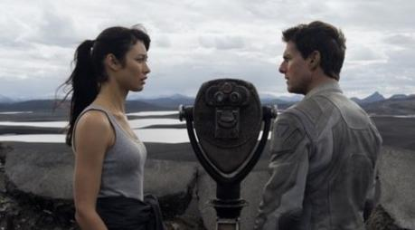

在末日后满目疮痍的未来地球上，一段不断涌现的昨日记忆带领正为人类生存奋战的主人翁，踏上一段救赎与发现之旅。时值2077年，经过数十年与外星人的争战，这些入侵者仍不放弃夺掠地球的剩余资源。身为收集地球重要资源之庞大计画的一员，杰克·哈伯(汤姆·克鲁斯饰)担任驻扎在人类已全面撤守的地球上的维安维修技师，他的任务也即将结束。
在末日后满目疮痍的未来地球上，一段不断涌现的昨日记忆带领正为人类生存奋战的主人翁，踏上一段救赎与发现之旅。时值2077年，经过数十年与外星人的争战，这些入侵者仍不放弃夺掠地球的剩余资源。身为收集地球重要资源之庞大计画的一员，杰克·哈伯(汤姆·克鲁斯饰)担任驻扎在人类已全面撤守的地球上的维安维修技师，他的任务也即将结束。
再过两个期，他将离开这被战争摧残的家乡，前往遥远的行星与已移居该处的幸存者会合。杰克住在离地数千英尺的美丽高空，每天进行巡逻工作，有一天他拯救了坠毁太空船中一位美丽的陌生人，原本意气风发的他从此跌落谷底。她与杰克的邂逅完全合乎逻辑，但她的出现却引发一连串的事件，迫使他开始质疑原本理所当然的一切。在现实粉碎后，他发现自己和过去地球有关的惊人事实，杰克将发掘自己潜在的英雄特质。现在人类的命运完全操在这个深信我们的世界即将永远消失的人的手中。
◎片 名 Oblivion
◎译 名 遗落战境/地平线/遗忘/遗忘星球/攻‧元2077(港)
◎年 代 2013
◎国 家 美国
◎类 别 动作/科幻/悬疑/冒险
◎语 言 英语
◎片 长 124分钟
◎导 演 约瑟夫·科金斯基 Joseph Kosinski
◎编 剧 约瑟夫·科金斯基 Joseph Kosinski ….(screenplay) and/(comic book) and
卡尔·盖杜谢克 Karl Gajdusek ….(screenplay) and
迈克尔·阿姆特 Michael Arndt ….(screenplay) (as Michael deBruyn)
◎主 演 汤姆·克鲁斯 Tom Cruise ….杰克 Jack Harper
欧嘉·柯瑞兰寇 Olga Kurylenko ….茱莉亚 Julia
摩根·弗里曼 Morgan Freeman ….马尔科姆·比奇 Malcolm Beech
安德丽亚·瑞斯波罗格 Andrea Riseborough ….维卡 Victoria
尼可拉·科斯特-瓦尔道 Nikolaj Coster-Waldau ….Sykes
佐伊·贝尔 Zoe Bell ….Kara
梅丽莎·里奥 Melissa Leo ….Sally
林赛·克里夫特 Lindsay Clift
杰伦·摩尔 Jaylen Moore ….Radio Operator
朱莉·哈汀 Julie Hardin ….Librarian
保罗·谷纳温 Paul Gunawan ….Survivor
杰伊·奥利弗 Jay Oliver ….Survivor (uncredited)
杰森·斯坦利 Jason Stanly ….NASA Controller (uncredited)
◎评 论
本片能在视觉上令人着迷，还拥有出人意料的感人爱情故事。
——《洛杉矶时报》
这是一部在诗意爱情和硬科幻之间取得了相当不错的的作品。
——《好莱坞记者报》
虽然开局太过迟缓，本片是少有的一部渐入佳境的作品。
——《旧金山纪事报》
◎幕后制作
制作源起
2005年，在约瑟夫·科金斯基执导首部剧情长片《创：战纪》的五年前，他写了12页的故事《遗落战境》。科金斯基一直梦想能将《遗落战境》写成剧本，但总找不到适当时机。这段延迟终于有了收获，科金斯基在好几年后认识了激进电影公司创始人巴里·莱文和杰西·伯格。他们一同将故事改编成绘本小说，由阿尔维德尼尔森撰稿，安德烈瓦林绘图，美术执导则是科金斯基、巴里·莱文和激进电影公司的美术指导杰洛米伯格。这让他们能够让投资人了解他们对这部作品的走向。科金斯基谈到他绘本小说的故事元素：“这是发生在2077年的动作冒险故事，惨烈的战争让地球无法居住，满目疮痍。故事的主人翁杰克，他是一名侦察机维修员，是一项重大任务中不可或缺的成员。一个他完全不知道的美好秘密，将成为拯救幸存人类的关键。”
导演要把重点放在故事中残酷的现实。他补充：“忽略事实加以掩盖和决定积极面对事实是完全不同的，无论面对真相有多么困难。”科金斯基承认这部科幻战争故事是他长久以来很想要呈现的。他从小沉迷于科幻名片像是：《最后一人》和《2001太空漫游》以及名著包括《海柏利昂》以及电视影集像是《阴阳魔界》。导演承认他喜欢这些想像未来科技的破落背景对比其酷炫的功能。他说：“我一直很喜欢70年代的科幻画家:克里斯佛斯和克里斯摩尔。我知道加上现今VFX视觉特效的技术，可以丝毫不差地诗梦园- 倩影翩翩结合数位动画和真实场景，完成一部前所未有的作品。
莱文与伯格对这位年轻导演的雄心深受感动。这部绘本小说本身很自然地成为向片场提案的优势。在2010年圣地牙哥国际动漫展中获得粉丝的热烈支持，科金斯基也同时在会中发表《创：战纪》片段，当时激进电影公司摊位在展览会场中总共发出三万册绘本。莱文回忆：“动漫展中有一千人的长龙等着让乔在《遗落战境》绘本上签名。除了故事之外，我们创作了令人印象深刻的标签和插画，从一开始就获得回响。得到这样的激励，我们决定踏出去把故事变成剧本。以如此高明的手法处理这个具有极佳架构又高概念性的故事，这绝对是前所未见。”
制作团队在动漫展中试过水温后不久，环球电影公司便加入与科金斯基、激进电影公司以及谢尔尼娱乐公司共同开发这个案子，《遗落战境》剧本也开始着手进行。资深制片彼得·谢尔尼以2011年卖座强片《猩球崛起》成功地让以故事为主轴的电影再度崛起，他从这部电影中学到的是：现今电影最重要模式是感人的情节加上刺激、高明且扣人心弦的故事。谢尔尼说明《遗落战境》的主轴：“《遗落战境》的故事之所以能引起人们的共鸣是因为，虽然是一部动作片，但电影的主轴是有关一个人要重先找回他的人性。这就是本片的核心，也是为什么让你看过之后感到无比满足。
为了这部剧情片，科金斯基和巴里·莱文又另外找了几位制片加入，包括与谢尔尼一同制作《猩球崛起》的迪伦·克拉克，以及以处理史诗片著称的邓肯·哈德森，他经手的作品风格迥异像是：《怒海争锋》和《哈利·波特与魔法石》。锁定卡尔·盖杜谢克和迈克尔·阿姆特担任编剧后，制作群终于可以开始这项重大计画，拍摄电影版《遗落战境》。克拉克回忆当初的设计和筹划：“《遗落战境》有乔所呈现的绝佳场景画面，故事发生在地球上，但并不会感觉到蒙尘、诡谲和晦暗。看起来很生动，充满色彩而且十分独特。我们也因此受到吸引，因为这样的概念设计是我们过去从未见过的。”
由于他的故事发生在本世纪末期，科金斯基深知他需要顶尖的设计团队来打造绝对的未来感，但又要让人相信这是离现在60年后的世界。他找来《创：战纪》的重要成员来打造他所要的末日后世界。哈德森知道导演一定能够完成这项巨大的挑战，回忆道：“乔是说故事高手，这部片子之所以让我感兴趣进而加入就是它的故事。他的故事一路带着让观众，一下子让你以为已经看出端倪，但下一刻又觉得不太对劲。不断有秘密自动揭开，就像剥洋葱一样。你一路看下去会不断有新发现；然后你不断地得到新的事实进而对情节有了全新的见解，一路惊喜不断。”
出色的演员阵容
目前动作冒险片在角色多数流于人海战术，《遗落战境》的特色之一就是演员十分精简。主人翁杰克是遗落地球上最后的侦察机维修员，他遇上幸存者的机会根本是微乎其微。由于编剧已经构筑出仰赖少数角色的严谨故事情节，制作团队深知找到完美的演员是赋予《遗落战境》生命的关键。当科金斯基思考谁最适合饰演杰克时，汤姆·克鲁斯绝对是首选之一。但当导演接到克鲁斯经纪人的电话回覆说，这位巨星已经看过激进电影公司的绘本且愿意坐下来谈时仍感到十分惊讶。科金斯基和克鲁斯约在伯班克的飞机维修场见面，科金斯基把这部短篇故事和本片的分镜图给他看。约莫三小时之后，克鲁斯告诉科金斯基他愿意一同参与这部电影。
由此开启了一整年为克鲁斯演出本片量身打造的工作。科金斯基谈到两人的合作：“汤姆很了解构筑一部好电影的要素。和他共同合作是很棒的经验，不只是在拍摄期间，还有早期的构思剧本和塑造角色。”克鲁斯回忆到当时有意加入《遗落战境》：“我读了这个故事也看了乔之前执导的广告片，于是我就打电话给他。我们见了面，他给我看《创》的片段，令我十分惊艳。我心想‘哇！这家伙会在电影界发光发热，他真的很有才华。‘乔能够建构不落俗套的世界，他对《遗落战境》雄心眼光让我很有兴趣。我从未看过这样的作品，包括他执导的方向和片中所有的元素都是。虽然从《少数派报告》之后我就没再拍过科幻片，但我很喜欢科幻题材，而且我知道乔一定拍得很好。”制片们对能找到持飞行执照的人来诠释杰克都非常兴奋，而且飞的是专为本片所设计独一无二的飞机。彼得·谢尔尼提到：“汤姆是飞行狂，他本身就是飞行员。我想他来驾驶气泡艇一定很开心，而且你还能在银幕上看到。”
与克鲁斯一同加入饰演茱丽亚和维多莉亚（又名“维卡”）分别是欧嘉·柯瑞兰寇和安德丽亚·瑞斯波罗格。谢尔尼带我们回顾制作群选角的过程；“这两位女演员必须负责完成故事中情感的部分。我们很用心地寻找最适当演员。欧嘉为茱丽亚带来灵魂和深度，而安德丽亚十分清新且充满活力。她们俩的组合相得益彰，也为原本在剧本页面中的角色赋予生命力。”银幕处女作便是《007：大破量子危机》的柯瑞兰寇承认她对这些磨人的任务都能全力以赴：“和电影里面看起来完全不一样。当茱丽亚闯入杰克和维卡的生活中，她是麻烦制造者。原本理想完美的生活方式瞬间崩毁。非常混乱，但演起来很开心。再加上这个角色需要许多肢体武打动作，那是我从未尝试过的。”
在茱丽亚坠毁在杰克面前之前，多年来他的身边只有一个女人陪伴。这位服从守纪的维卡欧森是杰克侦察机维修任务中的的导航官。虽然杰克心中摇摆存疑，维卡总是要他别去质疑上司，全心全意接受眼前的一切。英国女演员瑞斯波罗格谈到她在故事中的角色：“杰克和维卡已经走到开始他们发现两人想要的东西不一样。维卡是优异的策略者，在各方面都保持积极进取的乐观态度。她的做为虽然受到控制，但仍可感觉到有些桀傲不驯。”
当杰克在地球上遇到一群幸存者，他才发现这里不只有自己和诗梦园-倩影翩翩维卡。特邀道德观模糊的反抗军领袖马尔科姆·比奇的是奥斯卡奖得主摩根·弗里曼。他谈到自己接下这个角色的原因：“《遗落战境》有别于其他电影之处是它的原创性、服装、布景和机械道具。这是个独一无二的世界，乔是完美主义者，和他一起工作很愉快，因为他完全知道自己要什么。”克鲁斯谈到与这位传奇巨星的合作：“我在1990年第一次见到费里曼，那次我们都获得奥斯卡提名，我是因为演出《生于七月四日》而他则是《为黛茜小姐开车》。我很仰慕他，我还记得当晚在奥斯卡颁奖典礼上，我很想上前跟他打招呼，告诉他自己有多么喜欢他在电影里的演出，我们俩都说应该找机会合作。很可惜等了这么多年才终于有机会，但我很高兴能有这个机会与他合作。他是很棒的人，也是优异的演员。”
◎花 絮
广告导演出身的约瑟夫·科金斯基原本希望把《遗落战境》作为自己的电影导演处女作，但迪士尼公司邀请他执导《创：战纪》改变了他的计划。
2010年9月，在《创：战纪》上映前，迪士尼曾聘请《无间行者》、《天国王朝》编剧威廉·莫纳汉为电影版改编剧本。迪士尼公司原本已经为《遗落战境》的拍摄做了大量的前期筹备工作，但却在2011年初终止了影片的制作。从迪士尼手中接过《遗落战境》这一电影诗梦园- 倩影翩翩项目的环球影业为影片开出了1亿美元的制作预算，并邀请编剧卡尔·盖杜谢克（KarlGajdusek）改写了威廉·莫纳汉的剧本。
片中的外星人全由特技演员扮演，每套外星人服装都是独一无二，外星人的面罩用的是简单改造过的飞行头盔，再加上各种装饰加强视觉效果。
服装设计团队以灰色系来打造服装，片中所有服装都特别经过老化程序，营造出更为粗犷和年代久远的感觉，靴子和手套都是重头打造。
片中的配乐则由M.8.3的幕后高手安东尼冈萨雷斯操刀。
制作团队依照位纽约42街和第五大道交口，打造重现纽约公立图书馆，营造出末日后的氛围。
拍摄《遗落战境》时，汤姆·克鲁斯遭遇与凯蒂·霍尔姆斯的婚变。
